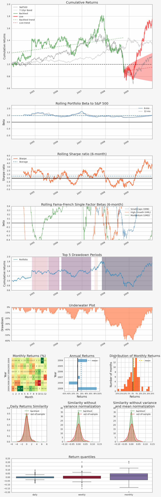
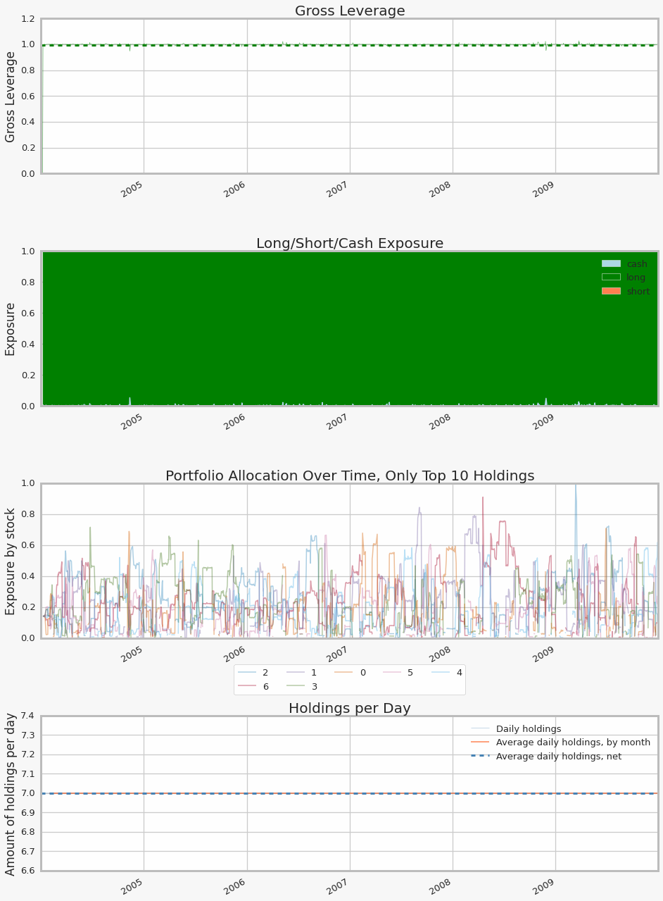
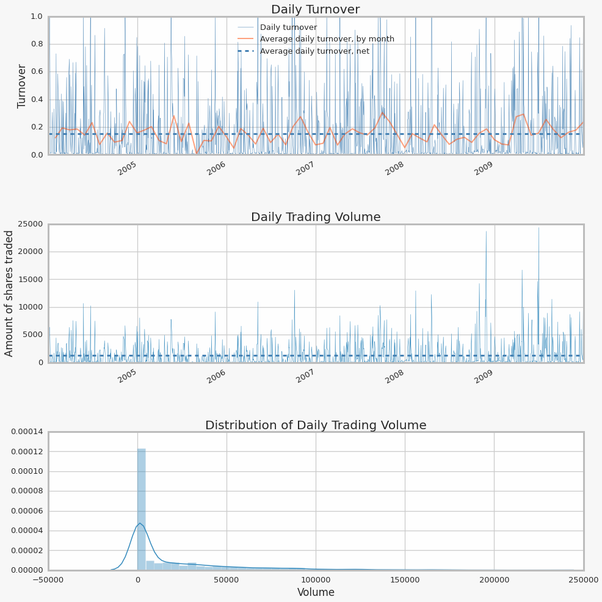
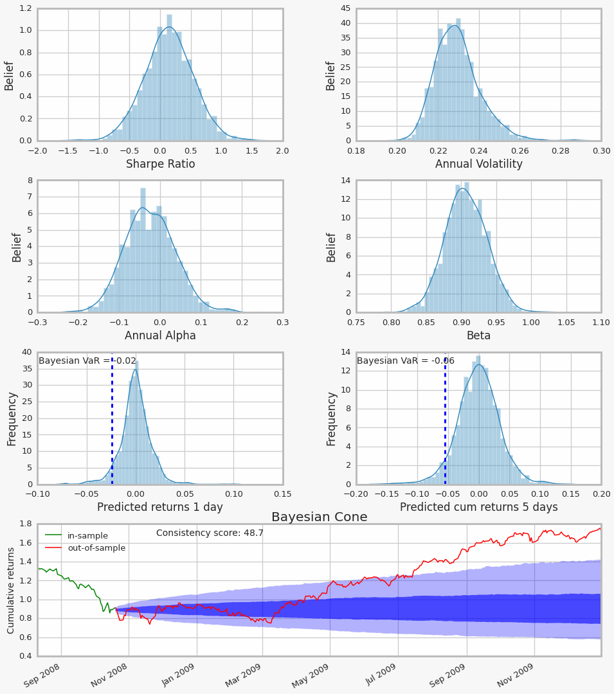

# Here is an example where we run an algorithm with zipline,
# then produce every tear sheet for that algorithm.
%matplotlib inline
from datetime import datetime
import pytz
import numpy as np
import pandas as pd
# Import Zipline, the open source backester
import zipline
from zipline import TradingAlgorithm
from zipline.data.loader import load_bars_from_yahoo
from zipline.api import order_target, symbol, history, add_history, schedule_function, date_rules, time_rules
import pyfolio as pf
# Zipline trading algorithm
# Taken from zipline.examples.olmar
import sys
import logbook
import numpy as np
from datetime import datetime
import pytz
from zipline.algorithm import TradingAlgorithm
from zipline.utils.factory import load_from_yahoo
from zipline.finance import commission
zipline_logging = logbook.NestedSetup([
logbook.NullHandler(level=logbook.DEBUG, bubble=True),
logbook.StreamHandler(sys.stdout, level=logbook.INFO),
logbook.StreamHandler(sys.stderr, level=logbook.ERROR),
])
zipline_logging.push_application()
STOCKS = ['AMD', 'CERN', 'COST', 'DELL', 'GPS', 'INTC', 'MMM']
# On-Line Portfolio Moving Average Reversion
# More info can be found in the corresponding paper:
# http://icml.cc/2012/papers/168.pdf
def initialize(algo, eps=1, window_length=5):
algo.stocks = STOCKS
algo.sids = [algo.symbol(symbol) for symbol in algo.stocks]
algo.m = len(algo.stocks)
algo.price = {}
algo.b_t = np.ones(algo.m) / algo.m
algo.last_desired_port = np.ones(algo.m) / algo.m
algo.eps = eps
algo.init = True
algo.days = 0
algo.window_length = window_length
algo.add_transform('mavg', 5)
algo.set_commission(commission.PerShare(cost=0))
def handle_data(algo, data):
algo.days += 1
if algo.days < algo.window_length:
return
if algo.init:
rebalance_portfolio(algo, data, algo.b_t)
algo.init = False
return
m = algo.m
x_tilde = np.zeros(m)
b = np.zeros(m)
# find relative moving average price for each asset
for i, sid in enumerate(algo.sids):
price = data[sid].price
# Relative mean deviation
x_tilde[i] = data[sid].mavg(algo.window_length) / price
###########################
# Inside of OLMAR (algo 2)
x_bar = x_tilde.mean()
# market relative deviation
mark_rel_dev = x_tilde - x_bar
# Expected return with current portfolio
exp_return = np.dot(algo.b_t, x_tilde)
weight = algo.eps - exp_return
variability = (np.linalg.norm(mark_rel_dev)) ** 2
# test for divide-by-zero case
if variability == 0.0:
step_size = 0
else:
step_size = max(0, weight / variability)
b = algo.b_t + step_size * mark_rel_dev
b_norm = simplex_projection(b)
np.testing.assert_almost_equal(b_norm.sum(), 1)
rebalance_portfolio(algo, data, b_norm)
# update portfolio
algo.b_t = b_norm
def rebalance_portfolio(algo, data, desired_port):
# rebalance portfolio
desired_amount = np.zeros_like(desired_port)
current_amount = np.zeros_like(desired_port)
prices = np.zeros_like(desired_port)
if algo.init:
positions_value = algo.portfolio.starting_cash
else:
positions_value = algo.portfolio.positions_value + \
algo.portfolio.cash
for i, sid in enumerate(algo.sids):
current_amount[i] = algo.portfolio.positions[sid].amount
prices[i] = data[sid].price
desired_amount = np.round(desired_port * positions_value / prices)
algo.last_desired_port = desired_port
diff_amount = desired_amount - current_amount
for i, sid in enumerate(algo.sids):
algo.order(sid, diff_amount[i])
def simplex_projection(v, b=1):
"""Projection vectors to the simplex domain
Implemented according to the paper: Efficient projections onto the
l1-ball for learning in high dimensions, John Duchi, et al. ICML 2008.
Implementation Time: 2011 June 17 by Bin@libin AT pmail.ntu.edu.sg
Optimization Problem: min_{w}\| w - v \|_{2}^{2}
s.t. sum_{i=1}^{m}=z, w_{i}\geq 0
Input: A vector v \in R^{m}, and a scalar z > 0 (default=1)
Output: Projection vector w
:Example:
>>> proj = simplex_projection([.4 ,.3, -.4, .5])
>>> print(proj)
array([ 0.33333333, 0.23333333, 0. , 0.43333333])
>>> print(proj.sum())
1.0
Original matlab implementation: John Duchi (jduchi@cs.berkeley.edu)
Python-port: Copyright 2013 by Thomas Wiecki (thomas.wiecki@gmail.com).
"""
v = np.asarray(v)
p = len(v)
# Sort v into u in descending order
v = (v > 0) * v
u = np.sort(v)[::-1]
sv = np.cumsum(u)
rho = np.where(u > (sv - b) / np.arange(1, p + 1))[0][-1]
theta = np.max([0, (sv[rho] - b) / (rho + 1)])
w = (v - theta)
w[w < 0] = 0
return w
start = datetime(2004, 1, 1, 0, 0, 0, 0, pytz.utc)
end = datetime(2010, 1, 1, 0, 0, 0, 0, pytz.utc)
data = load_from_yahoo(stocks=STOCKS, indexes={}, start=start, end=end)
data = data.dropna()
olmar = TradingAlgorithm(handle_data=handle_data,
initialize=initialize,
identifiers=STOCKS)
backtest = olmar.run(data)
AMD
CERN
COST
DELL
GPS
INTC
MMM
[2015-07-13 18:26:46.823994] INFO: Performance: Simulated 1511 trading days out of 1511.
[2015-07-13 18:26:46.824636] INFO: Performance: first open: 2004-01-02 14:31:00+00:00
[2015-07-13 18:26:46.825097] INFO: Performance: last close: 2009-12-31 21:00:00+00:00
# Extract the relevant information from the zipline backtest object
returns, positions, transactions, gross_lev = pf.utils.extract_rets_pos_txn_from_zipline(backtest)
# Create a full tear sheet, with Bayesian plots, for our algorithm
# As an example, pretend the first 80% was a backtest and the last 20% was live trading
pf.create_full_tear_sheet(returns,
positions=positions,
transactions=transactions,
gross_lev=gross_lev, bayesian=True, backtest_days_pct=0.8)
Entire data start date: 2004-01-02 00:00:00
Entire data end date: 2009-12-31 00:00:00
Out-of-Sample Months: 14
Backtest Months: 57
Backtest Out_of_Sample All_History
sortino_ratio 0.01 3.68 0.76
omega_ratio 1.00 1.33 1.09
max_drawdown -0.53 -0.22 -0.60
calmar_ratio 0.00 2.64 0.21
annual_return 0.00 0.59 0.12
stability 0.19 0.91 0.01
sharpe_ratio 0.00 1.70 0.48
annual_volatility 0.23 0.35 0.25
alpha 0.00 0.44 0.09
beta 0.84 0.80 0.81
Worst Drawdown Periods
net drawdown in % peak date valley date recovery date duration
0 59.50 2007-11-06 2008-11-20 NaT NaN
1 22.33 2006-02-16 2006-08-31 2007-05-21 328
2 12.52 2005-07-28 2005-10-12 2006-01-11 120
3 11.28 2004-11-15 2005-04-28 2005-07-22 180
4 9.44 2007-07-16 2007-08-06 2007-09-04 37
2-sigma returns daily -0.032
2-sigma returns weekly -0.065
dtype: float64
Stress Events
mean min max
Lehmann -0.003 -0.044 0.044
Aug07 0.003 -0.030 0.030
Sept08 -0.006 -0.043 0.040
2009Q1 -0.004 -0.050 0.034
2009Q2 0.007 -0.038 0.062
/opt/miniconda/lib/python2.7/site-packages/matplotlib/cbook.py:137: MatplotlibDeprecationWarning: The "loc" positional argument to legend is deprecated. Please use the "loc" keyword instead.
warnings.warn(message, mplDeprecation, stacklevel=1)
/opt/miniconda/lib/python2.7/site-packages/theano/scan_module/scan_perform_ext.py:133: RuntimeWarning: numpy.ndarray size changed, may indicate binary incompatibility
from scan_perform.scan_perform import *
Top 10 long positions of all time (and max%)
[2 6 1 3 0 5 4]
[ 0.993 0.911 0.845 0.717 0.709 0.666 0.62 ]
Top 10 short positions of all time (and max%)
[]
[]
Top 10 positions of all time (and max%)
[2 6 1 3 0 5 4]
[ 0.993 0.911 0.845 0.717 0.709 0.666 0.62 ]
All positions ever held
[2 6 1 3 0 5 4]
[ 0.993 0.911 0.845 0.717 0.709 0.666 0.62 ]
[-----------------100%-----------------] 2000 of 2000 complete in 5.0 sec




